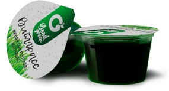
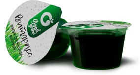
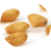

БИОТОНИК ВИТГРАСС GOODGREEN
ПРИРОДНЫЕ АКТИВАТОРЫ РЕГЕНЕРАЦИИ, УКРЕПЛЕНИЯ И ОМОЛОЖЕНИЯ ОРГАНИЗМА
 
ЧТО ТАКОЕ ВИТГРАСС
Витггасс (Wheatgrass) - это сок выжатый из молодых ростков пшеницы
- Отборные зерна пшеницы проращивают на гидропонных установках до высоты 10-15 см. После этого ростки срезают
- Срезанные промытые ростки отжимают на специальных соковыжималках на низких оборотах
- После отжима свежий Витграсс подвергается шоковой заморозке - так он сохраняет все полезные свойства в течение года
ИЗ ЧЕГО СОСТОИТ ВИТГРАСС
Витграсс содержит огромное количество витаминов, микро- и макроэлементов, незаменимых аминокислот, ферментов, протеин и хлорофилл
 
Витграсс не содержит глютен, не смотря на то, что его производят из ростков пшеницы